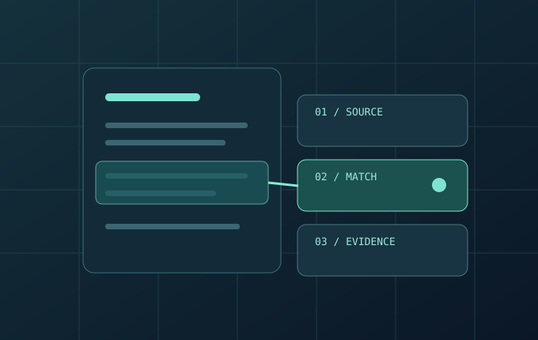
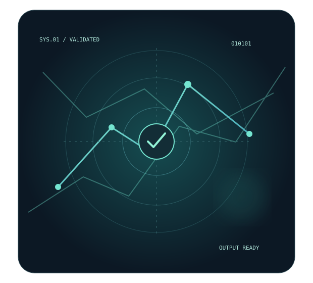
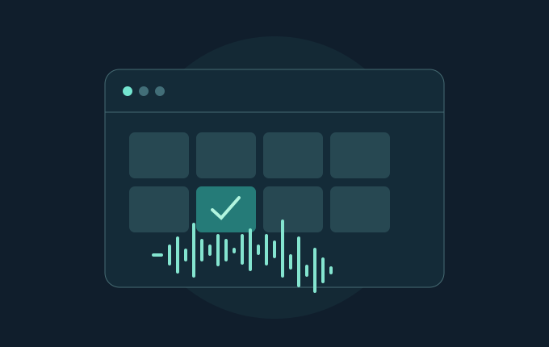
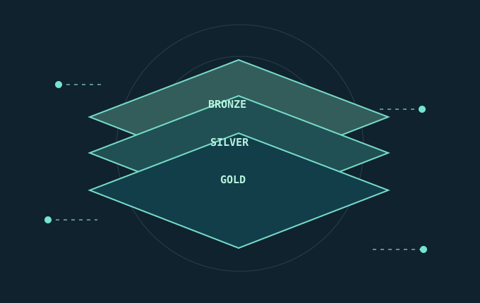
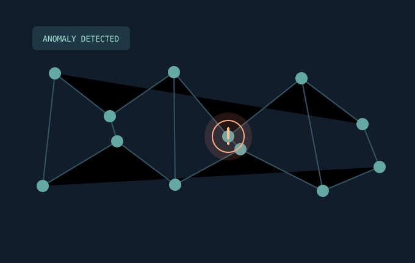
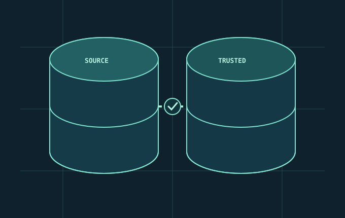

FEATURED RESEARCH DUBLIN, IRELAND AI & DATA ENGINEER
Building systems
that earn trust.
I’m Rameez. I turn complex data and AI ideas into reliable products, from retrieval systems and agents to production data pipelines.
01 MSc AI, First Class02 IEEE published03 AICS 2026 presenter

DATA → SIGNALVALIDATE / ITERATERETRIEVAL SYSTEMS✳DATA ENGINEERING✳APPLIED MACHINE LEARNING✳RELIABLE AI AGENTS✳RETRIEVAL SYSTEMS✳DATA ENGINEERING✳APPLIED MACHINE LEARNING✳RELIABLE AI AGENTS✳
01 / SELECTED WORK
Proof in the projects.
Practical systems, measured outcomes, and decisions you can inspect.




No projects match that search. Try another term or category.
 BUILDMEASUREREFINE
BUILDMEASUREREFINE02 / THE APPROACH
Curiosity, backed
by evidence.
I work where data engineering and applied AI meet. The interesting part is often beyond the model: clean inputs, careful evaluation, visible failure modes, and a system someone can confidently use.
My MSc in Artificial Intelligence at Dublin City University and production data work at Nineleaps shaped that approach. I like building the full path from messy source to useful outcome.
Python & SQLRAG & searchPySpark & DeltaML evaluationData qualityLLM agents
03 / EXPERIENCE
The work behind
the work.
2026 — PRESENT
Mathematics Tutor
Dublin City University · Dublin
Teaching calculus, optimisation, and mathematical modelling to first-year students across STEM, Economics, and Business.
MAR — JUL 2025
Data Analyst
Nineleaps Technology Solutions · Bangalore
Owned production Python automation and warehouse quality checks across six databases, reducing manual workflow overhead by 30%.
MAR — SEP 2024
Deep Learning Research Intern
NMIT College R&D · Bangalore
Evaluated LLM architectures for natural-language-to-SQL over 10,000+ query-answer pairs and built interfaces for inspecting failures.
04 / GET IN TOUCH
Let’s build something
worth trusting.
Interested in reliable AI, better data systems, or a thoughtful collaboration? I’d like to hear from you.
Start a conversation